Сфера.Реестр API
Набор инструментов для проектирования синхронных и асинхронных API,
база знаний для хранения реализованных API.
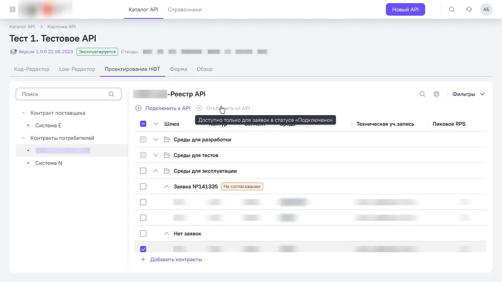
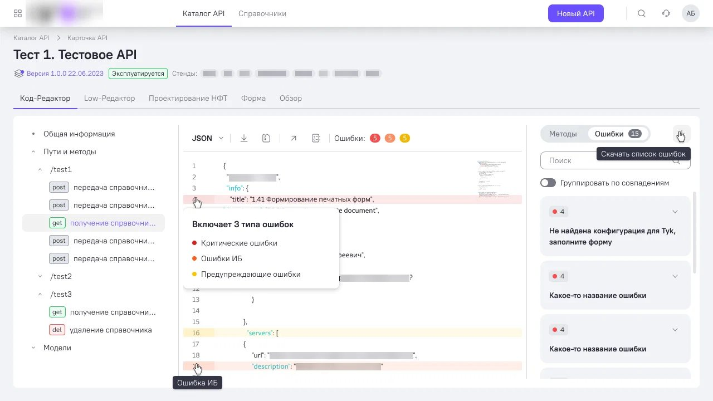
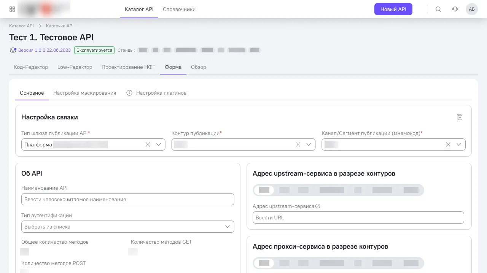
Задачи:
Банку был необходим отечественный инструмент для работы с API. К моменту, когда продукт был передан в мой стрим, в дизайне существовал ряд проблем:
- Дизайнер, работавший в проекте, был переведён в другой стрим;
- Дизайн не рассматривался как часть продуктового процесса — не было планирования задач на дизайн и учёта нагрузки дизайнера;
- Задачи на дизайн ставились без требований от аналитики, «на словах»;
- Продукт разрабатывался без учёта требований дизайн-системы, дизайн-долг никак не отслеживался и не исправлялся;
- Отсутствовал процесс фронт-ревью, реализованные интерфейсы сильно отличались от разработанных макетов;
- В рабочих файлах был беспорядок — не было системности в отрисовке пользовательских флоу, не использовались компоненты, файлы были перегружены;
- Отсутствовала практика проверки разрабатываемых решений на пользователях.
Результатом этих проблем стал неоднородный интерфейс, замедляющий работу пользователей.
Кейс #1
Оптимизация процессов дизайна
Проведены аудит и оптимизация процессов работы дизайнера в команде:
- Проведено глобальное ревью продукта с целью выявления проблем реализации и юзабилити;
- Дизайнер заменён через внутренний найм под задачи конкретного продукта и для решения выявленных проблем.
В продуктовой команде были отлажены новые процессы, Time to Market разработки макетов уменьшен на 60%
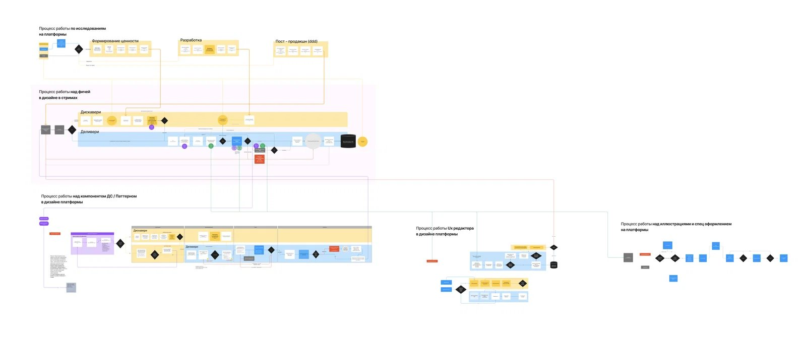
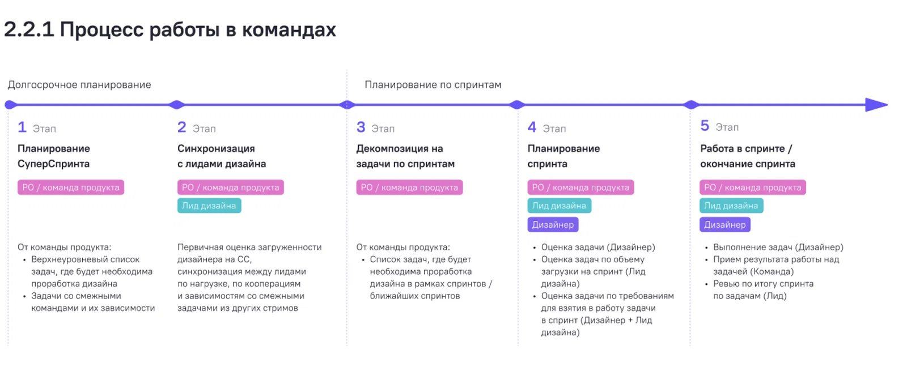
Введён процесс обязательного фронт-ревью со стороны дизайна, снизили Defect Density:
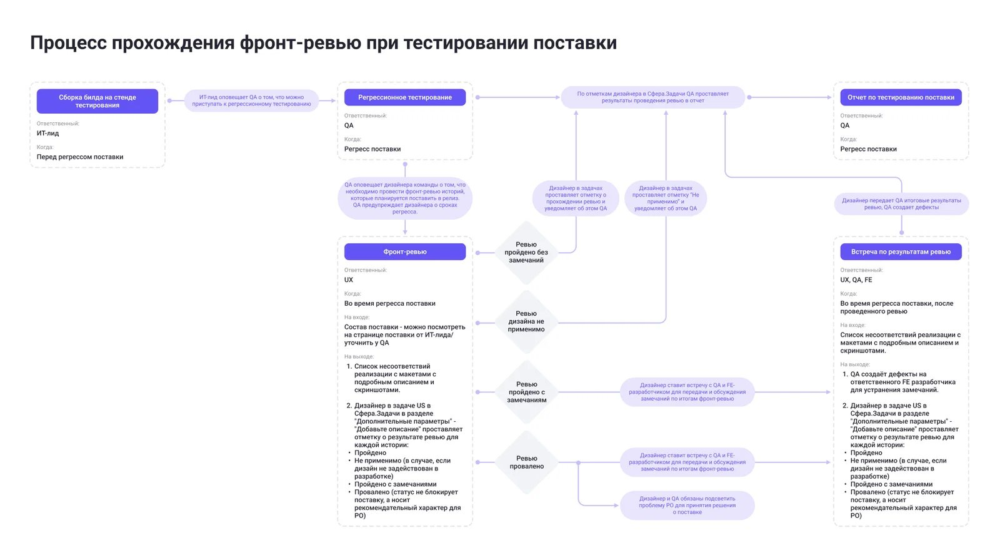
Проведён ряд исследований для формирования гипотез для решения выявленных проблем:
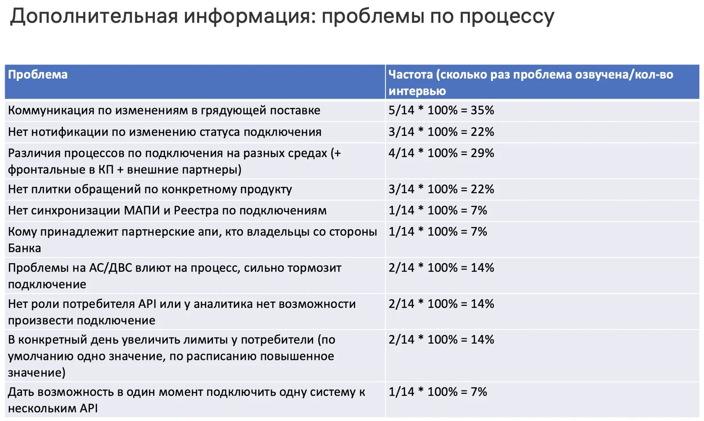
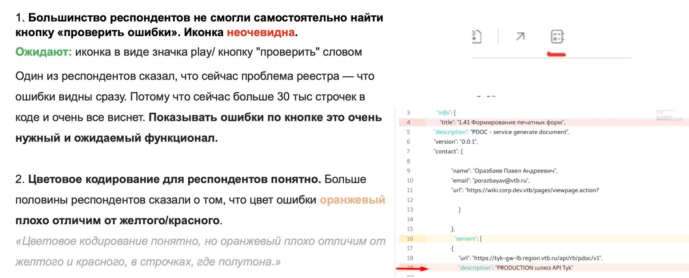
Выстроенные процессы позволяют валидировать решения на предмет оптимального пользовательского пути и корректной реализации.
Кейс #2
Проведён редизайн ключевого функционала продукта — карточки API
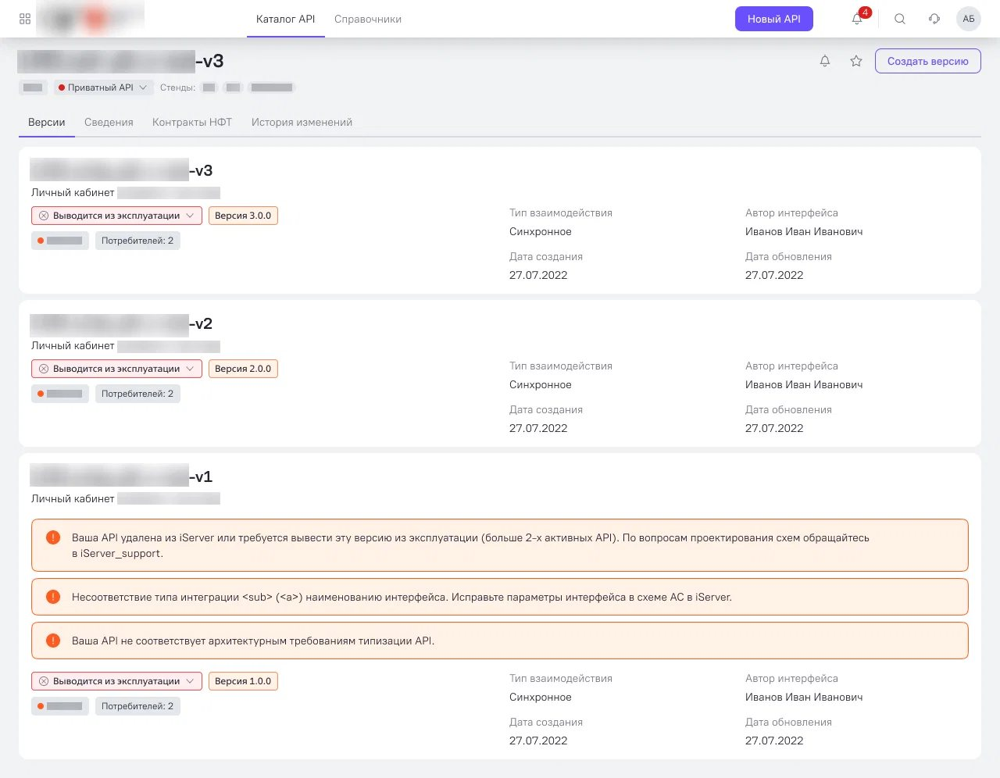
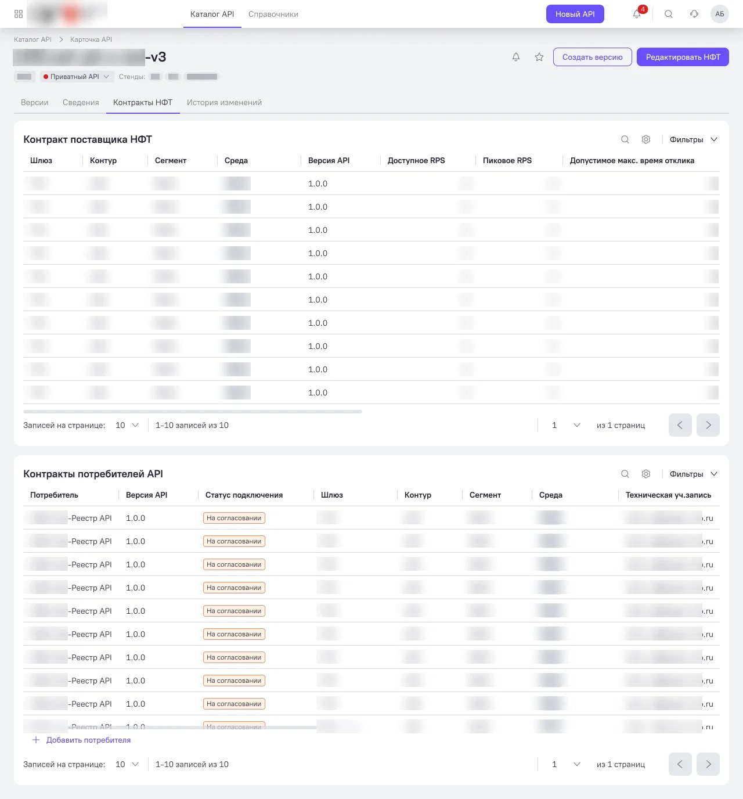
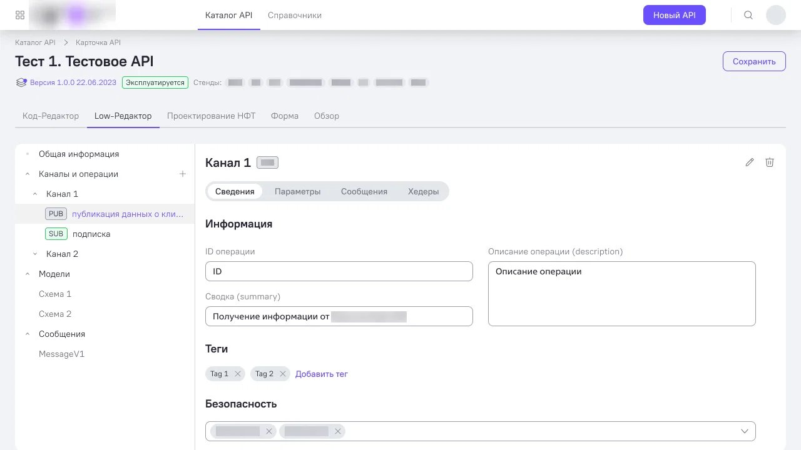
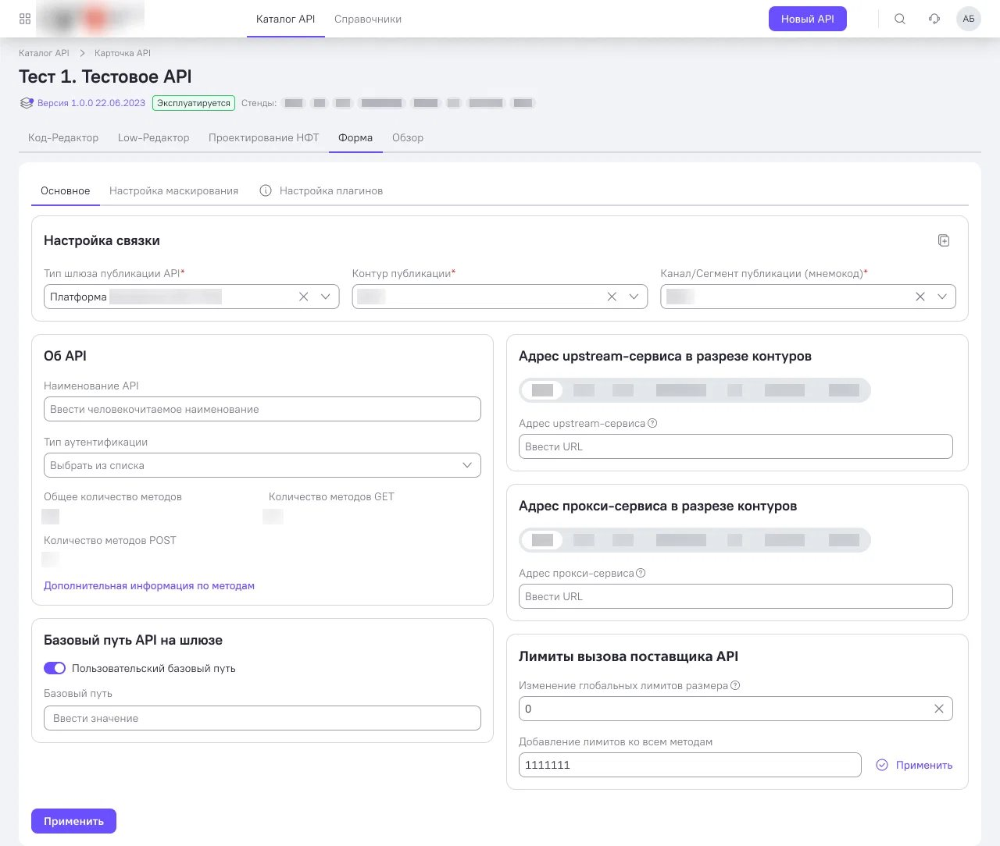
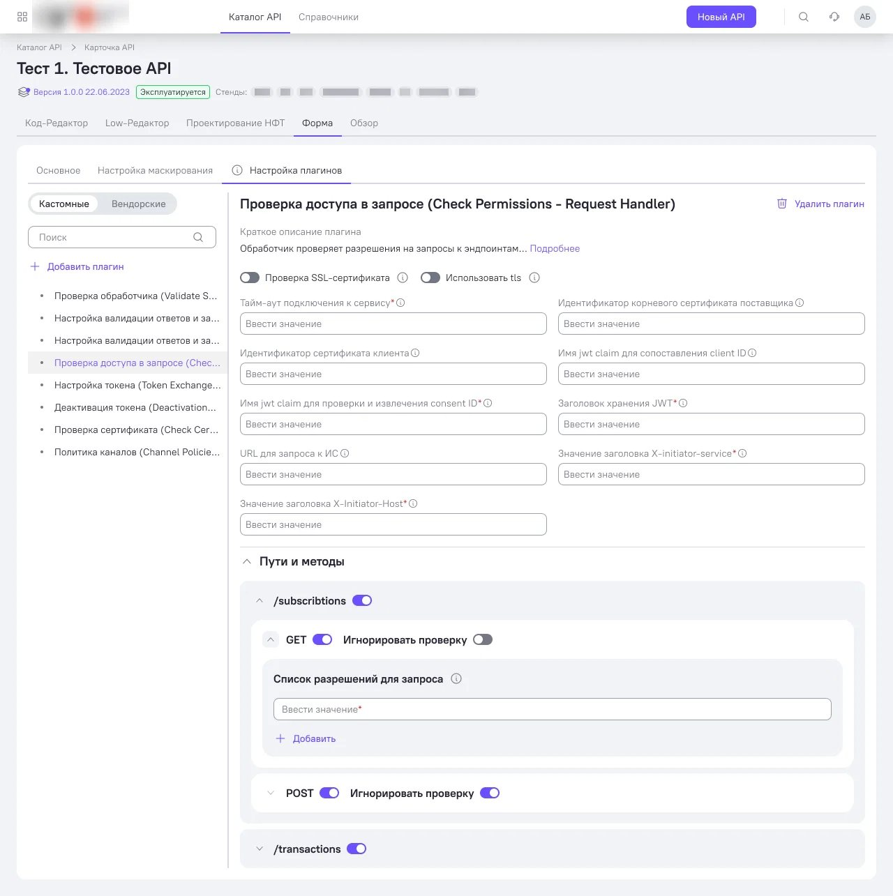
В процессе развития из продукта выделился один из сервисов, ставший самостоятельным продуктом, — хранилище внешних информационных систем
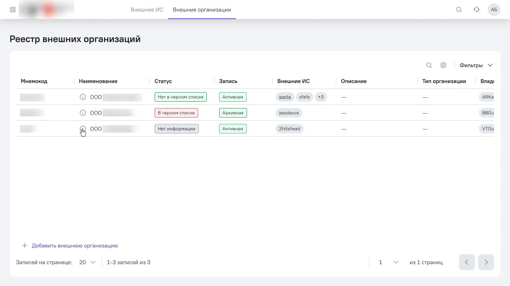
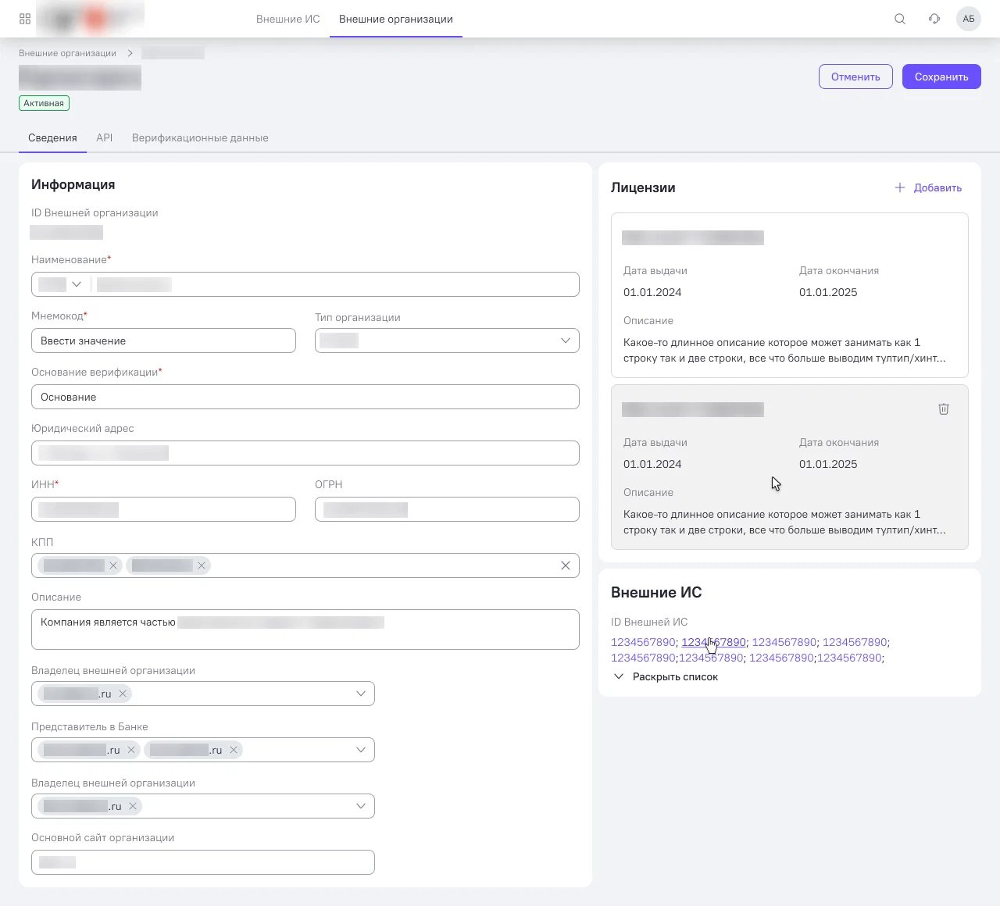
Общие метрики удовлетворённости пользователей стабильно растут:
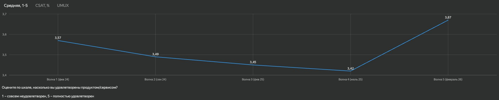
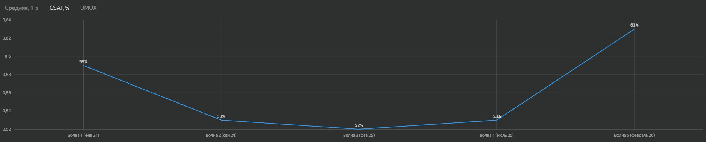
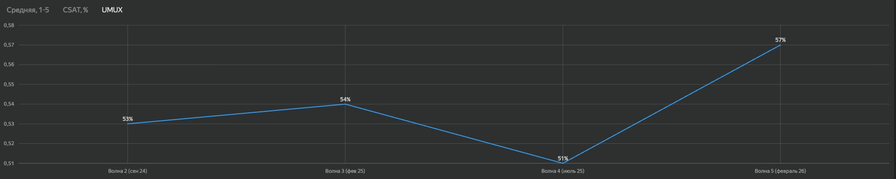